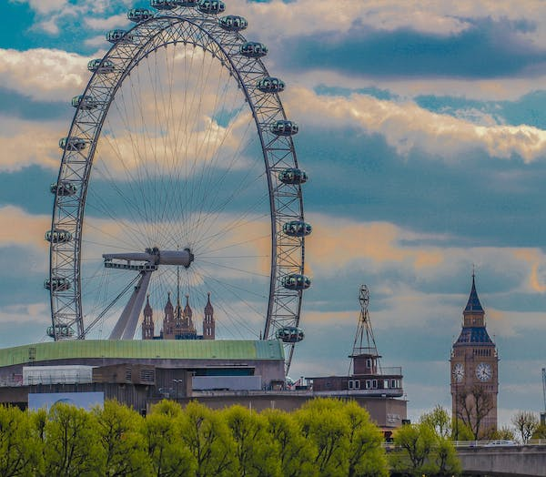
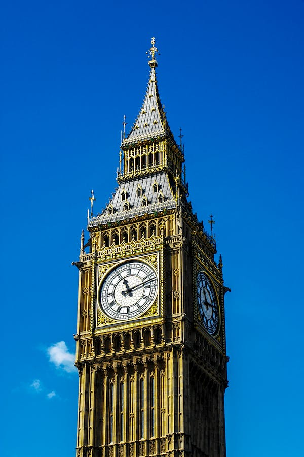

home
about
gallary
blog
contact
Going To london
Inline Tag


In the late 1960s the garage assumed operation of the Red Arrow routes with MBAs and later LSs until its closure in 1985. Following the closure of the Victoria and Ash Grove garages, from 1987 Walworth operated the Red Arrow routes for a short time until the Waterloo garage was ready.
During the early 1990s the garage once again re-opened, this time for the Londonlinks operation of routes 78 and 176. The Cowie Group undertook a major restructure a few years later which once again saw closure of Walworth garage in 1997. The garage was owned by the Go-Ahead Group and they leased it out.
The garage lay dormant for the next six years until late 2003 when work started on refurbishing the garage for Travel London, who needed more garage space after some contract wins including routes 381, 452 and N381.
Travel London won the contract for route 407, starting from 31th October 2009. This was used as the launch of the new Abellio name.
block tag

The City of London, widely referred to simply as the City, is a city, ceremonial county and local government district[note 1] that contains the ancient centre, and constitutes, alongside Canary Wharf, the primary central business district (CBD) of London and one of the leading financial centres of the world. It constituted most of London from its settlement by the Romans in the 1st century AD to the Middle Ages, but the modern area referred to as London has since grown far beyond the City of London boundary. The City is now only a small part of the metropolis of Greater London, though it remains a notable part of central London. Administratively, the City of London is not one of the London boroughs, a status reserved for the other 32 districts (including Greater London's only other city, the City of Westminster). It is also a separate ceremonial county, being an enclave surrounded by Greater London, and is the smallest ceremonial county in England.
- Enjoy this particular place
- memories and happy traveling
- fully positivity
- fully Anargy
- full activity